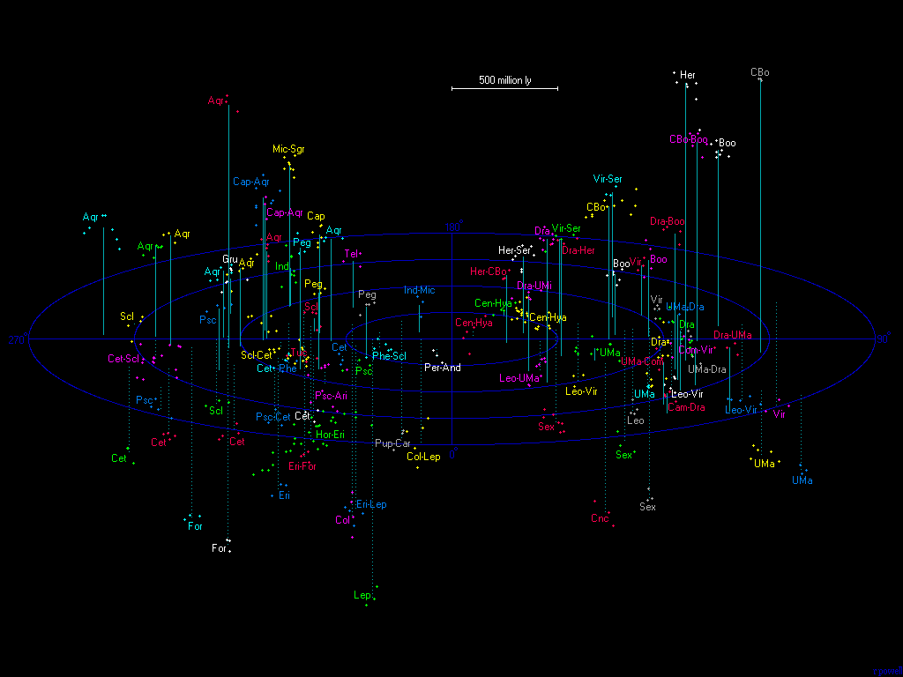
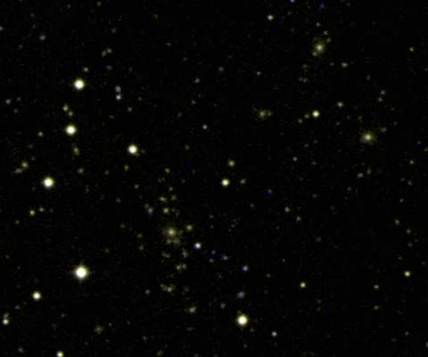

هذه خريطة لجميع العناقيد الفائقة المعروفة ضمن ملياري سنة ضوئية، مرسومة على المستوى الفائق المجري. كل نقطة على هذه الخريطة تمثل عنقودًا غنيًا من المجرات يحتوي على مئات المجرات كما هو مدرج في كتالوج أبيل للعناقيد الغنية من المجرات. هذه الخريطة لا تظهر كل العناقيد الغنية ولكن فقط تلك المجمعة في تشكيلات عناقيد فائقة كبيرة. كل من هذه العناقيد الفائقة يجب أن تحتوي أيضًا على مئات أو ربما آلاف المجموعات الصغيرة من المجرات. هذه الخريطة ليست كاملة، حيث يمر مستوى مجرتنا تقريبًا عبر مركز الخريطة، ومعظم علماء الفلك يفضلون دراسة المجرات البعيدة عن هذا المستوى حيث يوجد غبار وغاز أقل يحجب رؤيتنا للكون. هذا يفسر سبب وجود معظم العناقيد الفائقة المعروفة على الجانبين الأيسر والأيمن من الخريطة.
يمكن لهذه الصورة الاستفادة من مكتبة الجافاسكريبت PINCHZOOMer هو إضافة jQuery سهلة الإعداد تعمل على الأجهزة المحمولة وأجهزة الكمبيوتر، وتضيف وظيفة التكبير بالضغط / التكبير باستخدام عجلة الفأرة إلى الصور الخاصة بك.

التسميات على هذه الخريطة تشير إلى الأبراج التي تقع فيها غالبية العنقود الفائق، وقد تختلف هذه التسميات عن الاسم المعتاد للعنقود الفائق. على سبيل المثال، العنقود الفائق بيرسيوس-الحوت مسمى هنا بـ "Per-And". أكبر عنقود فائق على هذه الخريطة هو العنقود الفائق هورولوجيوم الكبير جدًا (المسمى Hor-Eri)، على الرغم من التأكيد على وجود أعداد كبيرة من العناقيد الغنية التي لم يتم نشر الانزياح الأحمر لها بعد. على سبيل المثال، من المحتمل وجود عنقود فائق كبير في كوكبة القاعدة على بعد 1.4 مليار سنة ضوئية مرتبط بعناقيد أبيل 3256، 3265، 3268، 3273، 3275، 3285، 3289، 3295، و3307، ولكن واحدًا فقط من هذه العناقيد لديه الانزياح الأحمر مدرج في تجميع الانزياح الأحمر لعناقيد النجوم لسترابل وروود (A3295، z=0.1062)، وبالتالي لم يتم رسم هذا العنقود الفائق على الخريطة.
هنا قائمة بالعناقيد الفائقة المعروفة في الكون التي تحتوي على ثلاثة عناقيد أبيل على الأقل. (من الممكن أيضًا إنتاج قائمة أطول بكثير من هذه تحتوي على عناقيد فائقة من عنقودين أبيل فقط مثل العنقود الفائق كوما.) البيانات المتاحة تصبح نادرة جدًا بعد ملياري سنة ضوئية، وهذا هو السبب في وجود سبعة عناقيد فائقة فقط مدرجة بعد هذا المسافة. العدد الإجمالي للعناقيد الفائقة ضمن ملياري سنة ضوئية يجب أن يكون على الأقل ستمائة وربما يصل إلى ألف، اعتمادًا على كيفية تعريف العنقود الفائق بالضبط. العدد الإجمالي للمجرات الكبيرة ضمن ملياري سنة ضوئية هو حوالي 25 مليون مجرة مع وجود عشرة أضعاف هذا العدد على الأقل من المجرات القزمة.
| الاسم الشائع | الإحداثيات الاستوائية | الإحداثيات الفائقة المجرية | الانزياح الأحمر (z) | المسافة (مليون سنة ضوئية) | الحجم (مليون سنة ضوئية) | الكوكبة | عناقيد أبيل في العنقود الفائق |
|---|---|---|---|---|---|---|---|
| قنطورس | 13 00 -32.0 | 148 -7 | 0.014 | 194 | 150 | قنطورس-حية | 1060, 3526, 3565, 3574, 3581 |
| بيرسيوس-الحوت | 02 32 +39.8 | 341 -8 | 0.016 | 222 | 100 | بيرسيوس-أندروميدا | 262, 347, 426 |
| بافو-إندوس | 20 34 -37.0 | 230 +32 | 0.017 | 235 | 100 | إندوس-ميكروسكوبيوم | 3656, 3698, 3742 |
| - | 00 53 -48.4 | 249 -11 | 0.027 | 372 | 150 | فينيكس-سكولبتور | 2731, 2806, 2836, 2870, 2877, 2896 |
| هرقل (أ) | 16 23 +36.7 | 77 +50 | 0.030 | 413 | 100 | هرقل-التاج الشمالي | 2162, 2197, 2199 |
| الأسد | 11 03 +22.7 | 85 -18 | 0.032 | 440 | 150 | الأسد-الدب الأكبر | 999, 1016, 1142, 1177, 1185, 1228, 1257, 1267 |
| شابلي (أ) | 13 51 -32.1 | 151 +3 | 0.037 | 507 | 100 | قنطورس-حية | 3570, 3571, 3575, 3578 |
| هرقل (ب) | 15 48 +16.1 | 109 +45 | 0.037 | 507 | 150 | هرقل-الثعبان | 2052, 2063, 2107, 2147, 2148, 2151, 2152 |
| - | 05 57 -26.6 | 255 -73 | 0.038 | 521 | 200 | الحمام-الأرنب | 548, 3341, 3374, 3381, 3390 |
| - | 23 28 +14.8 | 306 +24 | 0.040 | 548 | 100 | الفرس الأعظم | 2572, 2589, 2593, 2657 |
| - | 01 07 +0.4 | 298 -3 | 0.043 | 588 | 100 | قيطس | 119, 147, 168 |
| - | 01 22 +14.5 | 312 -2 | 0.044 | 601 | 150 | الحوت | 160, 193, 195 |
| شابلي (ب) | 13 21 -29.7 | 147 -2 | 0.048 | 654 | 200 | قنطورس-حية | 1631, 1644, 1709, 1736, 3528, 3530, 3532, 3542, 3553, 3554, 3555, 3556, 3558, 3559, 3560, 3562, 3564, 3566, 3572, 3577 |
| - | 23 43 -35.8 | 257 +5 | 0.049 | 668 | 100 | سكولبتور | 2717, 4008, 4012, 4013, 4059 |
| السدس | 10 15 -5.2 | 110 -40 | 0.050 | 681 | 200 | السدس | 912, 930, 957, 970, 978, 979, 993 |
| - | 06 20 -52.5 | 215 -53 | 0.051 | 694 | 100 | الكوثل-القاعدة | 3380, 3391, 3395 |
| - | 11 30 -4.3 | 115 -22 | 0.052 | 708 | 100 | الأسد-العذراء | 1216, 1308, 1334 |
| - | 15 10 +6.1 | 120 +34 | 0.052 | 708 | 150 | العذراء-الثعبان | 2020, 2023, 2040, 2055 |
| - | 21 55 -6.8 | 273 +40 | 0.055 | 747 | 100 | الدلو | 2366, 2399, 2415 |
| - | 02 17 -7.9 | 294 -22 | 0.057 | 774 | 150 | قيطس | 303, 326, 358 |
| الدب الأكبر | 11 48 +55.6 | 59 +4 | 0.058 | 787 | 200 | الدب الأكبر | 1270, 1291, 1318, 1324, 1377, 1383, 1436, 1452, 1507 |
| - | 17 35 +77.8 | 31 +27 | 0.058 | 787 | 150 | التنين-الدب الأصغر | 2248, 2256, 2271, 2296, 2309 |
| - | 20 12 -56.1 | 218 +16 | 0.058 | 787 | 100 | التلسكوب | 3651, 3667, 3685 |
| - | 21 48 -17.6 | 260 +36 | 0.058 | 787 | 100 | الجدي | 2361, 2362, 2372, 2382, 2383, 2401 |
| الحوت-قيطس (أ) | 00 34 -20.7 | 275 -1 | 0.060 | 813 | 350 | سكولبتور-قيطس | 14, 27, 74, 85, 86, 87, 114, 117, 121, 126, 133, 151, 2683, 2716, 2734, 2794, 2800, 2824, 4049, 4053 |
| - | 16 12 +51.8 | 59 +42 | 0.060 | 813 | 150 | التنين-هرقل | 2149, 2168, 2169, 2184 |
| التاج الشمالي | 13 55 +24.2 | 96 +20 | 0.061 | 826 | 150 | التاج الشمالي | 1781, 1795, 1825, 1827, 1828, 1831 |
| - | 01 04 -49.3 | 248 -13 | 0.063 | 852 | 100 | فينيكس | 2841, 2854, 2889 |
| الحوت-قيطس (ب) | 01 30 +16.9 | 315 -4 | 0.063 | 852 | 200 | الحوت-الحمل | 150, 152, 154, 158, 171, 179, 225, 257, 292, 311 |
| - | 03 12 -24.2 | 278 -37 | 0.065 | 879 | 150 | النهر-الفرن | 419, 428, 3094, 3095 |
| - | 00 56 -0.2 | 296 0 | 0.066 | 892 | 100 | قيطس | 102, 116, 134 |
| هورولوجيوم | 03 29 -48.3 | 247 -37 | 0.067 | 905 | 550 | هورولوجيوم-النهر | 3074, 3078, 3089, 3093, 3098, 3100, 3104, 3106, 3107, 3108, 3109, 3110, 3111, 3112, 3116, 3120, 3122, 3123, 3125, 3128, 3135, 3140, 3145, 3158, 3164, 3225, 3266, 3312 |
| - | 04 44 -20.8 | 282 -59 | 0.067 | 905 | 200 | النهر-الأرنب | 500, 514, 524, 3260 |
| - | 23 37 +20.2 | 312 +23 | 0.068 | 918 | 100 | الفرس الأعظم | 2618, 2630, 2637 |
| - | 00 58 -66.0 | 231 -15 | 0.069 | 931 | 150 | الطوقان | 2819, 2859, 2864 |
| - | 11 12 +3.6 | 105 -24 | 0.072 | 970 | 150 | الأسد | 1149, 1171, 1205, 1238 |
| التاج الشمالي | 15 25 +30.3 | 90 +40 | 0.072 | 970 | 250 | التاج الشمالي | 2005, 2019, 2056, 2061, 2065, 2067, 2079, 2089, 2092, 2122, 2124 |
| - | 22 42 -17.0 | 269 +25 | 0.072 | 970 | 100 | الدلو | 2456, 2459, 2462, 2480, 2492 |
| - | 10 33 +4.3 | 101 -32 | 0.073 | 983 | 100 | السدس | 1024, 1032, 1066 |
| - | 11 12 +40.6 | 70 -8 | 0.074 | 996 | 50 | الدب الأكبر | 1173, 1187, 1190, 1203 |
| - | 11 58 +31.8 | 82 -3 | 0.074 | 996 | 100 | الدب الأكبر-الهلبة | 1365, 1423, 1480 |
| - | 14 01 +26.9 | 93 +21 | 0.074 | 996 | 150 | التاج الشمالي | 1775, 1800, 1873, 1898 |
| - | 21 52 -55.3 | 230 +10 | 0.075 | 1008 | 200 | الإنديان | 3771, 3785, 3796, 3806, 3822, 3825, 3826, 3886 |
| - | 13 47 +3.4 | 117 +13 | 0.077 | 1034 | 100 | العذراء | 1773, 1780, 1809 |
| - | 01 54 +4.3 | 305 -13 | 0.078 | 1047 | 100 | الحوت-قيطس | 245, 279, 294 |
| - | 05 26 -39.9 | 241 -59 | 0.078 | 1047 | 200 | الحمام | 3332, 3336, 3351, 3356 |
| - | 15 11 +6.5 | 119 +34 | 0.078 | 1047 | 150 | العذراء-الثعبان | 2028, 2029, 2033 |
| - | 21 56 -20.2 | 259 +33 | 0.080 | 1073 | 100 | الجدي-الدلو | 2378, 2394, 2412 |
| - | 22 56 +17.8 | 308 +33 | 0.080 | 1073 | 100 | الفرس الأعظم | 2479, 2516, 2524 |
| - | 23 17 -11.4 | 278 +20 | 0.080 | 1073 | 200 | الدلو | 2511, 2525, 2559, 2569, 2597, 2638 |
| - | 03 09 -11.9 | 293 -35 | 0.081 | 1086 | 100 | النهر | 415, 420, 423 |
| - | 11 43 +11.3 | 100 -14 | 0.081 | 1086 | 150 | الأسد-العذراء | 1307, 1337, 1358, 1385, 1390 |
| - | 08 42 +27.8 | 57 -39 | 0.083 | 1111 | 150 | السرطان | 690, 692, 699 |
| - | 12 22 +12.3 | 102 -5 | 0.083 | 1111 | 150 | الهلبة-العذراء | 1474, 1526, 1541, 1552 |
| - | 12 58 -2.5 | 119 0 | 0.083 | 1111 | 100 | العذراء | 1620, 1650, 1651, 1663 |
| - | 22 04 -10.1 | 271 +37 | 0.083 | 1111 | 250 | الجدي-الدلو | 2376, 2377, 2400, 2402, 2410, 2420, 2428, 2448 |
| - | 23 18 -21.7 | 268 +16 | 0.084 | 1124 | 150 | الدلو | 2538, 2556, 2566, 2599, 4003 |
| - | 01 31 -27.7 | 271 -15 | 0.086 | 1150 | 100 | سكولبتور | 2915, 2919, 2924 |
| - | 18 33 +69.7 | 29 +36 | 0.086 | 1150 | 150 | التنين | 2295, 2301, 2304, 2308, 2311, 2312, 2315 |
| الكركي | 22 59 -44.7 | 245 +8 | 0.087 | 1163 | 150 | الكركي | 3908, 3910, 3925, 3963, 3972, 3998 |
| - | 01 53 -5.3 | 295 -15 | 0.088 | 1175 | 100 | قيطس | 256, 266, 277, 281 |
| المجهر | 20 34 -35.4 | 231 +34 | 0.089 | 1188 | 150 | المجهر-القوس | 3677, 3682, 3691, 3693, 3694, 3695, 3696, 3705 |
| - | 10 09 -0.1 | 103 -40 | 0.094 | 1252 | 150 | السدس | 919, 933, 954 |
| - | 00 05 +4.8 | 298 +13 | 0.096 | 1277 | 150 | الحوت | 3, 2694, 2698, 2700 |
| - | 05 49 -23.0 | 269 -73 | 0.096 | 1277 | 100 | الأرنب | 3365, 3367, 3368 |
| - | 12 47 +63.1 | 54 +13 | 0.102 | 1352 | 100 | الدب الأكبر-التنين | 1566, 1621, 1646 |
| - | 14 45 +55.2 | 62 +28 | 0.102 | 1352 | 100 | التنين-التاج الشمالي | 1925, 1962, 1999, 2000 |
| - | 00 42 -27.8 | 269 -4 | 0.106 | 1403 | 250 | قيطس-سكولبتور | 42, 80, 88, 118, 122, 2778, 2780, 2784, 2798, 2801, 2804, 2811, 2814, 2829, 2850 |
| - | 23 08 -14.5 | 274 +21 | 0.108 | 1428 | 100 | الدلو | 2529, 2533, 2543 |
| - | 11 42 +10.6 | 101 -14 | 0.109 | 1440 | 200 | الأسد-العذراء | 1341, 1342, 1345, 1354, 1372 |
| - | 03 42 -33.1 | 266 -43 | 0.110 | 1452 | 100 | الفرن | 3146, 3150, 3166 |
| - | 11 54 +62.9 | 53 +7 | 0.110 | 1452 | 200 | الدب الأكبر-التنين | 1289, 1322, 1477, 1518 |
| - | 23 13 -21.6 | 268 +17 | 0.111 | 1465 | 100 | الدلو | 2541, 2546, 2548, 2554, 2579, 2583 |
| - | 01 39 -7.1 | 293 -12 | 0.112 | 1477 | 150 | قيطس | 216, 217, 229, 243 |
| - | 02 53 -25.0 | 277 -33 | 0.112 | 1477 | 100 | الفرن | 389, 3062, 3070 |
| - | 12 13 +68.2 | 48 +11 | 0.112 | 1477 | 250 | التنين | 1302, 1366, 1406, 1421, 1432, 1559, 1561, 1597, 1674 |
| - | 15 20 +31.6 | 88 +39 | 0.113 | 1490 | 150 | التاج الشمالي-التاج الشمالي | 2034, 2049, 2062, 2069, 2083 |
| - | 00 10 -35.8 | 259 0 | 0.116 | 1527 | 150 | سكولبتور | 2715, 2721, 2730, 2767 |
| - | 14 56 +21.4 | 101 +34 | 0.116 | 1527 | 200 | التاج الشمالي | 1972, 1976, 1980, 1986, 1988, 2006, 2017, 2036 |
| - | 21 35 0.0 | 279 +47 | 0.119 | 1564 | 100 | الدلو | 2353, 2355, 2356 |
| - | 10 44 +75.3 | 39 +8 | 0.122 | 1601 | 300 | التنين | 786, 809, 818, 848, 948, 1029, 1123, 1150, 1297, 1301, 1381, 1536 |
| - | 01 16 +4.0 | 302 -4 | 0.124 | 1625 | 150 | الحوت | 153, 162, 172, 192 |
| - | 01 43 -10.8 | 289 -14 | 0.127 | 1662 | 100 | قيطس | 226, 228, 259 |
| - | 23 11 -22.4 | 267 +17 | 0.132 | 1723 | 200 | الدلو | 2518, 2521, 2540, 2555, 2565, 2568, 2577 |
| - | 09 24 +73.7 | 36 +3 | 0.133 | 1735 | 100 | الزرافة-التنين | 762, 765, 787, 788 |
| - | 11 50 -1.6 | 114 -16 | 0.134 | 1747 | 150 | العذراء | 1373, 1392, 1407 |
| - | 16 21 +42.2 | 70 +48 | 0.135 | 1759 | 200 | هرقل | 2158, 2172, 2179, 2183, 2196, 2211 |
| - | 10 22 +50.6 | 57 -10 | 0.136 | 1772 | 200 | الدب الأكبر | 950, 985, 990, 1002, 1004 |
| - | 11 36 +71.8 | 44 +9 | 0.148 | 1916 | 150 | التنين-الدب الأكبر | 1254, 1329, 1315, 1339 |
| - | 15 35 +37.3 | 80 +41 | 0.152 | 1963 | 50 | التاج الشمالي | 2093, 2096, 2100 |
| - | 10 22 +50.1 | 57 -10 | 0.155 | 1999 | 50 | الدب الأكبر | 965, 980, 1000 |
| - | 11 18 +17.4 | 92 -17 | 0.169 | 2164 | 100 | الأسد | 1204, 1219, 1232 |
| - | 10 00 +71.2 | 40 +2 | 0.187 | 2371 | 150 | الدب الأكبر | 864, 873, 914, 922 |
| - | 23 44 -10.4 | 281 +14 | 0.191 | 2417 | 100 | الدلو | 2646, 2652, 2661 |
| - | 13 16 +58.3 | 60 +16 | 0.194 | 2451 | 100 | الدب الأكبر | 1687, 1707, 1731 |
| - | 10 25 +67.7 | 44 +2 | 0.200 | 2519 | 200 | الدب الأكبر | 945, 968, 981, 998, 1005, 1006, 1017 |
| - | 01 36 -13.1 | 286 -13 | 0.207 | 2597 | 100 | قيطس | 209, 222, 223 |
| - | 14 44 +31.2 | 89 +31 | 0.225 | 2797 | 150 | التاج الشمالي | 1958, 1961, 1963 |
تم إنتاج الجدول أعلاه عن طريق البحث عن جميع عناقيد أبيل (مع الانزياح الأحمر المنشور) التي تقع ضمن 2200 كم/ث من بعضها البعض في فضاء الانزياح الأحمر. (2200 كم/ث تساوي تقريبًا 100 مليون سنة ضوئية.) أنا لست أول شخص يفعل هذا، حيث تم نشر العديد من الكتالوجات لعناقيد عناقيد أبيل. مثال حديث هو هذه الورقة (انظر أيضًا هذا الرابط) بواسطة إيناستو، إيناستو، تاجو، مولر، وأنديرناخ. لاحظ أنه على الرغم من أن هذه التركيزات الضيقة لعناقيد أبيل عادة ما تتوافق مع عناقيد فائقة فعلية، فإن هذه التقنية لا تظهر العديد من الجدران والألواح من المجرات التي تربط العناقيد الفائقة.
يمكن لهذه الصورة الاستفادة من مكتبة الجافاسكريبت PINCHZOOMer هو إضافة jQuery سهلة الإعداد تعمل على الأجهزة المحمولة وأجهزة الكمبيوتر، وتضيف وظيفة التكبير بالضغط / التكبير باستخدام عجلة الفأرة إلى الصور الخاصة بك.
